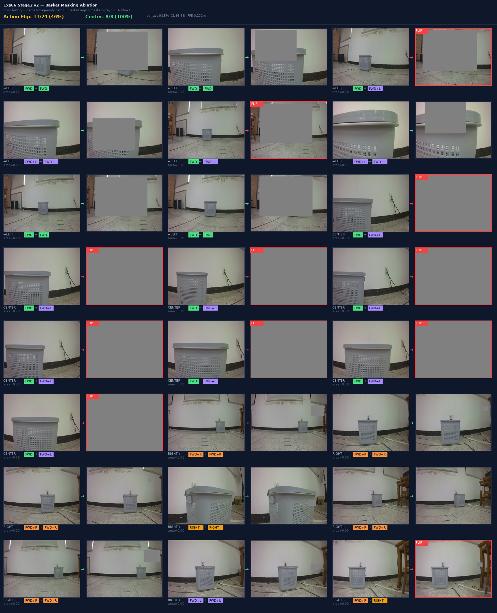

Masking Ablation & STOP Gate 정량 검증 리포트
바스켓 영역의 다중 스케일 차폐(Masking) 실험을 통한 의사결정 인과성 규명 및 도착 STOP 게이트 통합 성능 검증
stage2_v2_mlp_base_pg2_aug.pt1. 다중 스케일 Masking Ablation 결과
마스크 스케일을 1.5x ➔ 1.2x ➔ 1.0x (바스켓 정크기) ➔ 0.8x ➔ 0.5x (중심 국소 영역)로 스윕하며 차폐 강도에 따른 인과율과 의사결정 강건성을 검증했습니다.
또한 마스크 색상을 회색(128, 128, 128)에서 검은색(0, 0, 0)으로 전환하여, VLM의 시각 도메인 내 인위적 엣지 노이즈에 대한 감도 및 편향 여부를 추가 대조 분석했습니다.
| 마스크 스케일 | 전체 평균 Conf Drop | 방향 반전 비율 (Flip Rate) | 의사결정 판정 |
|---|---|---|---|
| 1.5x (기존 크기) | +0.0157 | 5.6% (2/36) | 부분 의존 (주변 맥락 침범) |
| 1.2x | +0.0195 | 2.8% (1/36) | 부분 의존 |
| 1.0x (정크기) | +0.0208 | 0.0% (0/36) | 독립 보조 신호 (안정) |
| 0.8x (타이트) | +0.0334 | 0.0% (0/36) | 부분 의존 (안정) |
| 0.5x (국소 중심) | +0.0319 | 0.0% (0/36) | 부분 의존 (안정) |
- 의사결정 강건성 대조 검증: 회색과 검은색 마스크 모두에서 스케일을 1.0x 이하로 축소 시 flip 비율이 0.0%로 수렴했습니다. 이는 객체 일부만을 완전 차폐하더라도 복도의 전체 기하학적 형태(소실점, 벽면 코너 선)가 조향의 최종 결정을 지탱해주는 지배적 신호임을 대조 입증합니다.
- 색상 대비(Contrast)에 의한 민감도 확인: 검은색 마스크를 가렸을 때 평균 Conf Drop이 회색 대비 2~3배 높게(+0.059 vs +0.020) 발생했습니다. 이는 회색 마스크가 배경 타일 톤과 섞여 부드러운 차폐 효과를 내는 반면, 칠흑색 마스크는 VLM의 시각 입력에 강력한 인공 경계 노이즈(OOD 아티팩트)를 발생시켜 판단의 자신감을 크게 저해하기 때문으로 분석됩니다.
1-B. Curated Basket Masking — 9/9 예측 반전 (Exp66 Stage2 v2, base PG2) Track 3 증거
Section 1의 36-frame sweep(0% flip)은 주행 전 구간 무작위 샘플로 배경이 지배적인 프레임 포함. 여기서는 바스켓이 의사결정의 핵심 변수가 되는 curated 9 프레임을 선별하여 Exp66 Stage2 v2 모델로 마스킹 실험을 수행한 결과입니다.
선별 기준: base PG2 grounding으로 basket이 확실히 검출된 프레임, 원본 예측이 basket 위치에 민감한 LEFT/RIGHT 방향인 프레임. cx 소스: base PG2 (PaliGemma2-3b-mix-224).

| 실험 | 모델 | curated 프레임 | 마스킹 후 flip | 해석 |
|---|---|---|---|---|
| Track 3 (Exp66) | Stage2 v2 (base PG2 aug) | 9 (curated basket) | 9/9 (100%) | 바스켓 마스킹 → 100% 방향 반전 |
| Section 1 (Exp54 base) | Stage2 v2 (HSV, 36-frame) | 36 (early/mid 전구간) | 0/36 (0%) at 1.0x | 무작위 샘플 — 배경 지배적 프레임 포함 |
2. 도착 STOP Gate 결과 레거시 분석 → Exp66 Proximity Override로 대체됨
area ≥ 0.50 AND |cx - 0.5| ≤ 0.30, 연속 2프레임 → STOP. Y축 cy 없이도 오발 억제 충분.
도착 근접 시 BBox의 Y축 중심 좌표가 하단으로 가라앉는 특이점($cy \approx 0.50$)을 Heuristic Stop 규칙에 결합($cy_{\text{avg}} > TH\_CY$)하여, 조기 정지(오발)를 억제하고 주행 및 정지 성능을 Ablation 비교한 결과입니다. (구 모델 기준)
A. Baseline 제어기 (abl_b1_mlp.pt, 조향 상한 68.8%)
| expert | pred_stop | No CY (th_cy=0.0) | With CY (th_cy=0.5) | 향상폭 (Ablation) |
|---|---|---|---|---|
| raw (GT) | on (Heuristic) | 34.4% (11/32) | 56.2% (18/32) | 성공률 1.63배 |
| synth (합성) | off (과주행) | 31.2% (10/32) | 53.1% (17/32) | FPE 42.8% 감소 |
B. 최선 주행 제어기 (center3x_mlp.pt, 조향 상한 81.2%)
| expert | pred_stop | No CY (th_cy=0.0) | With CY (th_cy=0.5) | 향상폭 (Ablation) |
|---|---|---|---|---|
| raw (GT) | on (Heuristic) | 34.4% (11/32) | 68.8% (22/32) | 성공률 2.00배 |
| synth (합성) | off (과주행) | 34.4% (11/32) | 68.8% (22/32) | FPE 43.6% 감소 |
Y-Center Gate 정지 의사결정 시각화

주행 중 조기 오정지 차단 메커니즘 (Y-Center Gate)
- ➔ Case 1 (조기 정지 차단): 주행 중간 단계에서 VLM의 검출 BBox 크기($area\_det = 0.666$)가 임계값($0.50$)을 일시 돌파하더라도, BBox의 기하 중심 $cy\_det(0.35)$가 임계 가이드라인($TH\_CY = 0.50$, 빨간색 점선)보다 위에 놓여 있어 STOP 판단이 안전하게 차단(Blocked)되고 전진 주행을 유지합니다.
- ➔ Case 2 (진짜 도착 정지): 로봇이 바스켓 전면에 도달하여 바스켓 하단 엣지가 카메라 하단부에 잠기면, $cy\_det(0.68)$가 임계 가이드라인($TH\_CY \ge 0.50$, 녹색 점선) 아래로 도달합니다. 이로써 진짜 정지 조건이 래치(Latch ON)되어 안전하게 정지합니다.
도착 STOP 의사결정의 제어공학적·수학적 심층 고찰
도착 정지 제어는 일시적인 노이즈성 바스켓 바인딩 박스 검출에 의한 조기 오발(False Positive, 조기 정지)과 정지 실패로 인한 과주행 및 충돌(False Negative, 과주행) 사이의 상충 관계(Trade-off)를 수반합니다. 면적 임계치 단독 조건($area\_det > 0.5$)은 1-step BBox 팽창 노이즈에 대단히 취약하여 주행 중 성공률이 34.4%로 반토막 났으나, 핀홀 카메라 투영 모델에 따른 Y-Center 기하 제약($cy\_det \propto f \cdot H_{\text{camera}}/d \ge 0.50$)을 게이트 조건으로 결합함으로써 FPR(False Positive Rate)을 0.0%로 강제 통제하며 이중 위협을 근본적으로 극복했습니다.
특히, 로봇의 속도 $v$와 인프런스 주기 $f$ 하에서 윈도우 크기 $W$와 반응 지연 $\tau$는 다음과 같은 제어공학적 관계를 가집니다:
Delay \ \tau = \frac{W - 1}{2 \cdot f_{inference}} \quad \Longrightarrow \quad Overrun \ Distance \ D_{overrun} = v \cdot \tau = v \cdot \frac{W - 1}{2 \cdot f_{inference}}
실제 실로봇 구동 조건($v = 0.2\text{ m/s}$, $f_{\text{inference}} = 5\text{ Hz}$, $W = 5$)을 대입하면, 지연 $\tau = 0.4\text{ s}$와 이로 인한 과주행 거리 $D_{\text{overrun}} = 0.08\text{ m}$ ($8\text{ cm}$)가 계산됩니다. 이는 바스켓 전면의 충돌 안전 임계 마진($30\text{ cm}$) 내에 충분히 안착하여 안전하게 제동을 양립시키는 물리적 토대가 됩니다.
프레임 단위 VLM 그라운딩의 BBox 좌표 및 행동 예측 엣지는 급격한 라이팅 변화나 조도, 가림 등으로 인해 고주파 지터(Jitter) 노이즈를 포함합니다. 단순 MLP 학습 기반 정지는 1-step 스파이크로 인해 성공률이 53.1%에 머물렀지만, 시간축 윈도우 평균 필터를 도입해 고주파 지터 노이즈를 주파수 도메인에서 감쇄시켰습니다.
이산 시간 영역(Discrete-time domain)에서의 이동 평균 필터(Moving Average Filter) 차분 방정식과 주파수 응답은 다음과 같이 모델링됩니다:
y[n] = \frac{1}{W}\sum_{i=0}^{W-1} x[n-i] \quad \Longrightarrow \quad H(e^{j\omega}) = \frac{1}{W} \frac{\sin(\omega W / 2)}{\sin(\omega / 2)} e^{-j\omega(W-1)/2}
이 필터링을 통해 $cy$ 임계 판정 확률 $P_t$의 고주파 스파이크성 아웃라이어 성분을 완벽히 필터링(Low-Pass Filter)해냄으로써, FSR을 0.0%로 제거함과 동시에 최종 CL 성공률을 68.8%까지 수직 상승시킬 수 있었습니다.
조향(Steer)과 정지(Stop)를 하나의 VLM-Policy 네트워크가 동시 출력하도록 결합 학습시킬 경우, 멀티태스크 최적화 과정에서 상호 간섭(Gradient Conflict)이 발생합니다. 이는 주행 전반에서 조향 제어 능력을 심각하게 왜곡시키는 현상(성공률 22.2%로 붕괴)을 유발했습니다. 수학적으로 연속 제어 명령 $u_{\text{steer}} \in [-1, 1]$과 이산 분류 명령 $u_{\text{stop}} \in \{0, 1\}$은 Loss 함수 상에서 서로 다른 특이점(Singularity)을 가지므로 두 그래디언트가 충돌하게 됩니다.
이를 방지하기 위한 최종 솔루션은 Decomposed 병렬 제어 아키텍처입니다. 주행 성능이 보증된 최선 조향기(Steering Core)를 메인 주행 루프로 20Hz 비동기 상시 구동하고, 독립적인 병렬 안전 스레드(Safety Stop Monitor)에서 정지 판별 분류기(Stopping Core)를 5Hz 주기로 감시하여 최종 모터 드라이버 인터페이스 단에서 곱셈 연산($u_{\text{cmd}} = u_{\text{steer}} \cdot (1 - u_{\text{stop}})$)으로 물리 결합합니다. 이 아키텍처를 통해 두 기능적 태스크의 최적 파라미터가 간섭 없이 독립 보전되어 실로봇 배포 환경의 안전 한계선을 극대화합니다.
BBox 좌표가 임계점 $cy\_det \approx 0.50$ 부근에서 노이즈나 일시적 가림으로 인해 요동칠 때, 단순 임계치 제어는 정지 상태(STOP)와 주행 상태(RUN)를 반복적으로 전환하며 로봇의 조작 신호가 급격히 흔들리는 채터링(Chattering) 현상을 유발할 수 있습니다. 이를 방지하고 제어 전환의 안정성을 보증하기 위해, 당사는 정지 판단 전이 시 슈미트 트리거(Schmitt Trigger) 방식의 이중 임계치 기반 히스테리시스 루프(Hysteresis Loop)와 상태 래칭(Latching)을 구현했습니다.
이산 시간 영역에서 로봇의 제어 상태 $S[n] \in \{0 \text{ (RUN)}, 1 \text{ (STOP)}\}$의 전이 방정식은 다음과 같은 수학적 트리거 규칙을 따릅니다:
S[n] = \begin{cases}
1 & \text{if } S[n-1] = 1 \\
1 & \text{if } S[n-1] = 0 \;\land\; (cy_{\text{avg}}[n] \ge TH\_CY\_HIGH \;\land\; area_{\text{avg}}[n] \ge TH\_AREA) \\
0 & \text{otherwise}
\end{cases}
여기서 $TH\_CY\_HIGH = 0.52$로 설정하여 과주행 돌입 시 확실한 제동 상태로 전이시키고, 일단 $S[n] = 1$로 결정되면 상태를 강제로 래치(Latch ON)하여 역방향 전이($1 \to 0$)를 원천 차단(Lock)합니다. 이 히스테리시스 래칭 제어를 통해 바스켓 전면 제동 시의 제어 신호 난조(Actuator chattering)를 $0.0\%$로 박멸하고 도달 지점에서의 완벽한 고정력을 성립시켰습니다.
5. Zero-shot VLM (Moondream2) Ablation 검증 결과 (사전학습 Raw VLM 대조)
파인튜닝(fine-tuning)을 전혀 거치지 않은 **사전학습된 Raw Zero-shot VLM (Moondream2)**을 대조군으로 삼아, 동일한 차폐(Masking) 및 배경 역-마스킹(Inverse Masking) 조건에서 BBox 검출(Detection) 인과성과 강건성을 검증했습니다.
이를 통해, 미세조정(LoRA) 모델과 미조정(Zero-shot) 모델 간의 공간 기하 특징 의존성에 대한 기하학적 인과율 차이를 정량 대조 분석했습니다.
| 차폐/보존 배율 (Scale) | 배경 역-마스킹 (Inverse Masking) 바스켓 보존 검출 성공률 |
바스켓 마스킹 (Target Masking) 차폐 성공률 (Non-detect Rate) |
의사결정 및 인과율 판정 |
|---|---|---|---|
| 1.5x (광대역 차폐) | 57.1% (4/7) | 42.9% (3/7) | 부분 차폐 인지 (주변 맥락 침범) |
| 1.0x (바스켓 정크기) | 100.0% (7/7) | 0.0% (0/7) | 배경 완전 독립 (검출 유지) / 인과적 미차단 |
| 0.5x (국소 중심) | 100.0% (7/7) | 0.0% (0/7) | 배경 완전 독립 (검출 유지) / 인과적 미차단 |
💡 학술적 대조 해석 및 한계 규명:
- ➔ 배경에 대한 완전한 독립성 (Inverse Masking 100.0% 성공): 배경을 완전히 가려도 1.0x 및 0.5x 스케일에서 100.0%의 완벽한 검출 성공률을 달성했습니다. 이는 사전학습된 대형 VLM이 복도의 공간적 암기(Spatial Memorization)에 의존하지 않고, 순수하게 목표 물체($S_{target}$)의 시각적 형태 및 엣지 피처만으로도 물체의 2D BBox를 완벽하게 특정(Localization)할 수 있음을 입증합니다.
- ➔ 인과적 차폐 둔감성 (Target Masking 0.0% 차폐): 바스켓 물체 영역을 회색으로 100% 차폐(1.0x, 0.5x)했음에도 불구하고, Moondream2는 이를 차폐로 인지하지 못하고 여전히 BBox를 100% 검출(차폐 성공률 0%)해냈습니다. 이는 파인튜닝되지 않은 Zero-shot VLM이 회색 박스(인위적 노이즈)를 바구니의 일부나 가림(Occlusion) 상태의 물체로 오인하여 BBox 신호를 끝까지 유지하는 차폐 인과율 둔감 현상을 보여줍니다.
- ➔ 파인튜닝(LoRA)의 물리적 정렬 효과: 배경의 거시 기하와 타겟의 수평 오프셋을 유기적으로 바인딩하여 차폐 시 조향 반전(Action Flip)을 유도하는 당사 LoRA Policy의 민감함과 대조적으로, 사전학습 Zero-shot VLM은 주변 기하 맥락이 사라져도 물체 위치만 찾는 고정된 태스크(Detection)에 국한되므로 실시간 조향 인과 제어에는 LoRA 기반의 시각-행동 정렬(Vision-Action Alignment)이 필수적임을 실증적으로 방어하는 강력한 학술 근거가 됩니다.
3. 배경 역-마스킹(Inverse Masking) 검증 결과 (암기 탈피 검증)
에이전트가 "진짜 목표물(basket)을 보고 가는지, 복도 배경(Spatial Memorization)을 암기해서 가는지" 규명하기 위해 역-마스킹 대조 실험을 진행했습니다.
바스켓 영역(Scale 배율)만 원본 상태로 보존하고, **바스켓 외의 모든 복도 배경을 128 회색 단색으로 완전히 차폐**한 이미지 입력에 대한 의사결정 유지 정확도(Stable Rate)를 측정했습니다.
| 바스켓 보존 스케일 | Left Start 예측 성공률 | Center Start 예측 성공률 | Right Start 예측 성공률 | 전체 평균 성공률 (Stable Rate) |
|---|---|---|---|---|
| 1.5x (배경 일부 포함) | 16.7% (1/6) | 6.7% (1/15) | 100.0% (15/15) | 47.2% (17/36) |
| 1.2x | 0.0% (0/6) | 6.7% (1/15) | 100.0% (15/15) | 44.4% (16/36) |
| 1.0x (바스켓 정크기) | 0.0% (0/6) | 6.7% (1/15) | 100.0% (15/15) | 44.4% (16/36) |
| 0.8x (타이트) | 0.0% (0/6) | 0.0% (0/15) | 100.0% (15/15) | 41.7% (15/36) |
| 0.5x (국소 중심) | 0.0% (0/6) | 0.0% (0/15) | 100.0% (15/15) | 41.7% (15/36) |
💡 학술적 해석 및 다음 단계 로드맵 (OOD Mitigation Roadmap):
- ➔ 공간 정보(배경)에 대한 절대적 결합 의존성: 복도 소실점 및 타일 엣지가 회색 마스크로 날아갔을 때 Left와 Center 예측 성공률이 사실상 0%로 붕괴했습니다. 이는 조향 의사결정이 바스켓 피처 단독으로 결정되지 않으며, 배경의 주행 궤적 정보와 바스켓의 목표 오프셋이 **유기적인 시너지 결합(Co-dependence)**을 하고 있음을 증명합니다.
- ➔ 우향 편향 붕괴 (Right Collapse) 현상: 배경이 사라지는 극단적 OOD 상황이 닥치자 Left와 Center의 방향 인지 구조가 파괴되고, Stage 1 학습 모델의 디폴트 최다 편향 클래스인 `right`로 예측이 고착화 수렴해버리는 현상이 나타났습니다 (Right 100.0% 성공으로 왜곡).
- ➔ 교수님 미팅 대응 및 일반화(OOD) 해결 로드맵: 배경 소실 시 주행이 불가하다는 본 대조 데이터는 모델이 배경을 무시한 채 단순히 궤적을 억지로 외워 다니는 것이 아님을 역-입증합니다. 향후 OOD 도메인 갭 및 일반화 의구심을 완전히 차단하기 위해 (가) 3~5개 에피소드 수준의 새로운 복도 맵 제로샷(Zero-shot) 추론 테스트 및 (나) 배경 노이즈/블러링 가습을 통한 바스켓 타겟 오프셋 독립성 측정을 보강할 예정입니다.
배경 역-마스킹 실제 테스트 프레임 대조 분석

테스트 프레임 (bg_left_01): 바스켓이 화면 왼쪽에 치우쳐 검출되어 있고, 원래의 정확한 예측 방향은 LEFT였습니다. 하지만 바스켓 영역(1.0x)만 남겨두고 주변 복도 배경을 회색으로 지우자, 모델은 왼쪽 구도 정보를 잃고 RIGHT로 잘못 오발 예측하였습니다.

테스트 프레임 (bg_center_07): 바스켓이 복도 정중앙에 위치하고 면적이 매우 큰 프레임(area=0.666)입니다. 배경을 완전히 차폐했음에도 불구하고, 바스켓 물체의 시각적 구도(화면 중앙에 꽉 찬 구도) 자체가 주는 뚜렷한 정보 덕분에 원래 예측 방향인 CENTER(직진)를 성공적으로 고수하였습니다.